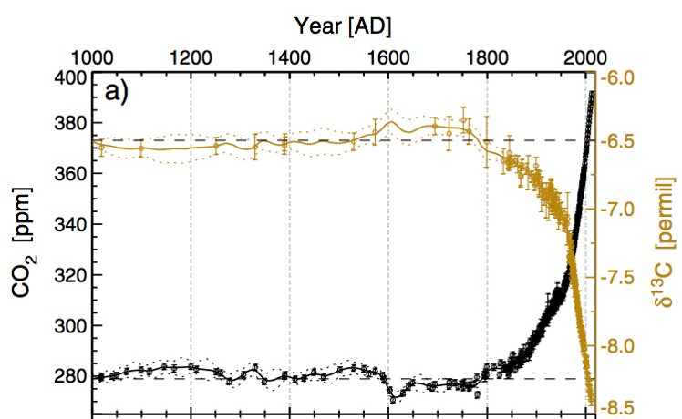
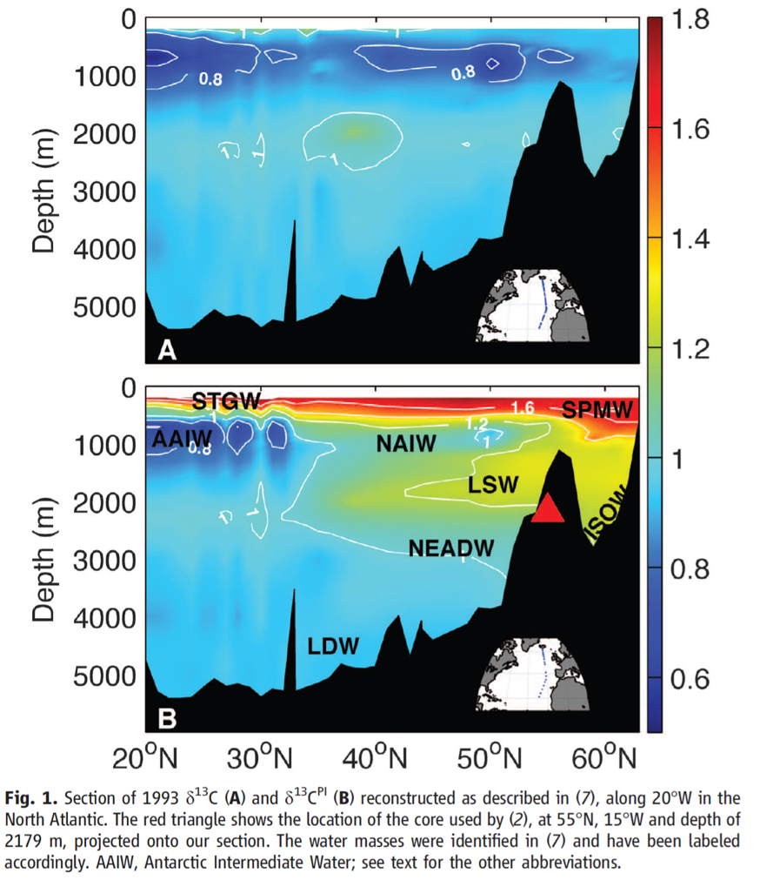

Carbon has several isotopes. 12C is the most common one. There's also the heavier 13C. Plants prefer the lighter 12C. Fossil fuels such as oil and coal come from ancient plant. As we burn fossil fuels, we send less 13C and more 12C to the atmosphere. The decrease of the ratio between 13C to 12C in the atmosphere is called Suess Effect.

The recent decrease in δ13C in the deep sea due to uptake of carbon has been measured in samples taken on hydrographic surveys, although these surveys only provide snapshots of deep sea δ13C. The long-term decrease in δ13C has been estimated using modern hydrographic properties, but there are no direct measurements.

My project focused on records of δ13C from benthic and planktonic foraminifera, collected south of Iceland in the North Atlantic Ocean. The cores have high accumulation rates and, based on radiocarbon, modern core tops. We find a monotonic decreasing trend since 1850 that is significant in two out of the three benthic records we have generated. A tracer simulation, with Transit Time Distribution and Equilibrium Time Distribution generated from previous tracer modeling studies, predicts a trend that is similar to our observations at the core sites. The presence of the Suess Effect in some of the cores is consistent with previous estimates on the uptake of anthropogenic CO2 in the newly formed North Atlantic Deep Water.